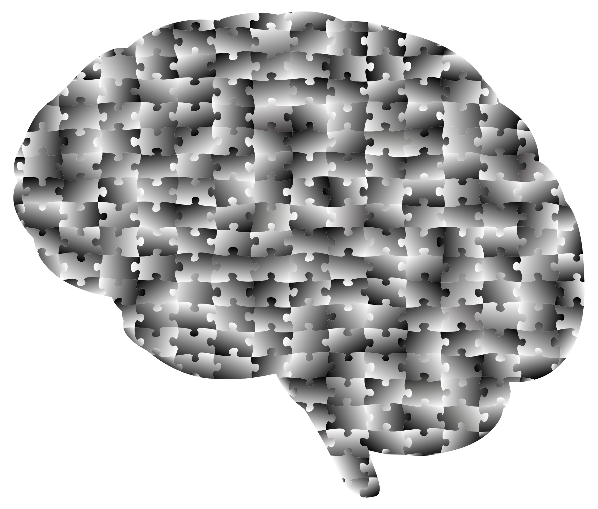
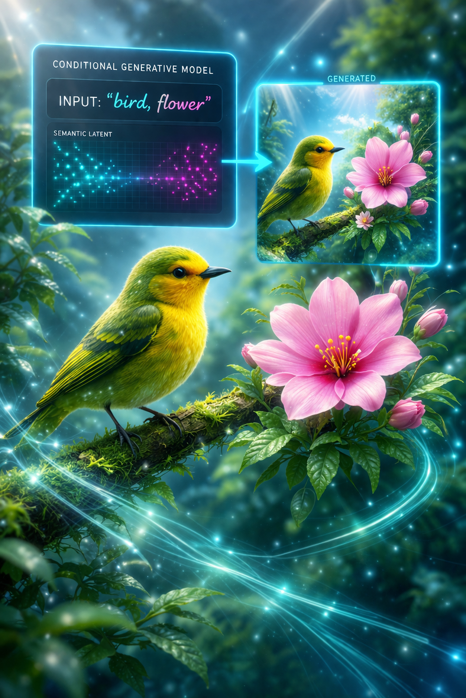

Machine Learning
Learning-based systems spanning RL, generative modeling, anomaly detection, representation learning, and theory-grounded AI for robotics and engineering applications.
This domain brings together machine learning projects ranging from generative vision systems and reinforcement learning to anomaly detection and neural architecture studies. Each work is presented as a standalone engineering artifact with its own visual identity, descriptive summary, and repository link.
Machine Learning Archive
Click any panel to open the corresponding GitHub repository.

DriftCTRL
DriftCTRL is a control-systems testbed for analyzing vehicle lateral stability under challenging dynamic conditions. Built around the classical linear bicycle model, the platform evaluates multiple steering control strategies including feedforward curvature tracking, Linear Quadratic Regulation (LQR), and Sliding Mode Control (SMC) within a unified simulation framework. The system exposes the full lateral–yaw dynamics pipeline, allowing precise study of yaw-rate tracking, lateral velocity regulation, actuator limits, and robustness under identical road-curvature disturbances. By comparing fundamentally different control philosophies within the same vehicle model, DriftCTRL reveals the trade-offs between smoothness, optimality, and robustness that emerge in high-performance vehicle control systems. The framework emphasizes transparent mathematical modeling and reproducible experimentation, providing quantitative metrics and visual trajectory analysis to characterize controller behavior. As a compact yet rigorous evaluation environment, DriftCTRL serves as a practical platform for exploring advanced automotive control strategies and stability-focused vehicle dynamics research. Its modular architecture allows rapid extension to additional control laws, disturbance models, and vehicle parameters, enabling systematic benchmarking across diverse driving scenarios. The platform therefore functions not only as a controller comparison tool but also as a flexible research environment for studying the dynamics of high-performance vehicle control systems.
Open Repository
Label Conditioned Robot Vision
Label-Conditioned Robot Vision is a generative perception framework that explores how semantic labels can act as controllable priors for visual scene synthesis in robotic perception systems. Built around conditional Generative Adversarial Networks (cGANs), the system learns to generate images conditioned on symbolic labels, enabling structured control over visual content while preserving the statistical properties of real-world datasets. The framework progressively evaluates this capability across increasing visual complexity, from simple handwritten digits to fine-grained natural categories such as flowers and birds, exposing how conditional generation scales with semantic richness. Beyond image synthesis itself, the project investigates controllability, training stability, and dataset-driven failure modes that emerge when generative models are guided by semantic constraints. By framing label conditioning as a perception primitive rather than a purely artistic generator, the system demonstrates how generative models can support robotics tasks such as synthetic dataset augmentation, semantic grounding, and perception robustness testing. The result is a modular experimental platform for studying controllable visual generation and its role in next-generation robot perception pipelines. This capability enables creation of semantically structured visual data, helping accelerate the development and evaluation of perception algorithms in data-constrained robotic environments.
Open RepositoryPerceiver Architecture Study
A minimal PyTorch reimplementation of the Perceiver architecture, centered on Fourier positional encodings, cross-attention from inputs into a learned latent bottleneck, and a latent Transformer stack. The project emphasizes clarity, architectural intuition, and reproducible training behavior on CIFAR-10 rather than brute-force scale, making the model anatomy easy to inspect and reason about.
Open RepositoryProphetLSTM-GAN
ProphetLSTM-GAN is a hybrid anomaly detection framework designed for early fault identification in complex telemetry streams from safety-critical systems such as liquid rocket engines. The architecture combines temporal sequence modeling with adversarial learning, integrating an LSTM-based generator with a discriminator network to model the normal behavior of multivariate time-series signals. By learning the statistical structure of nominal engine telemetry, the system detects deviations through a composite anomaly score that blends reconstruction error, discriminator confidence, and trend residuals inspired by Prophet-style time-series decomposition. This multi-signal scoring mechanism enables the framework to identify subtle precursors to abnormal behavior before conventional threshold-based monitoring systems trigger alerts. The platform is designed for rigorous evaluation against traditional baselines including redline threshold monitoring, classical machine learning detectors, and LSTM autoencoder approaches. Through its hybrid modeling strategy, ProphetLSTM-GAN demonstrates how deep generative architectures can enhance early anomaly detection and reliability monitoring in mission-critical aerospace systems. Such predictive monitoring capability is essential for improving operational safety and enabling proactive maintenance strategies in high-risk propulsion environments.
Open Repository